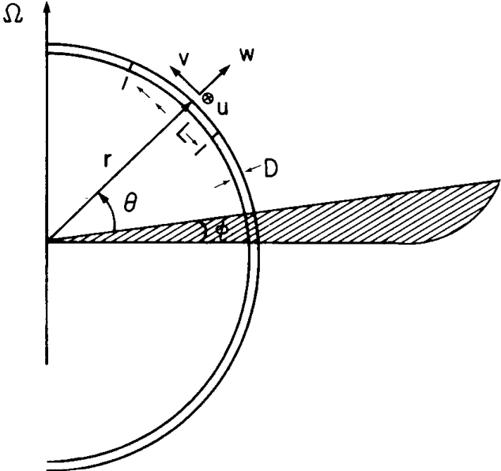

$$ \rho\Big[ -2 \Omega \underbrace{v}_{\text{northward velocity}} \sin\theta + 2\Omega \underbrace{w}_{\text{vertical velocity}} \cos\theta \Big] = -\frac{1}{r \cos\theta} \frac{\partial p}{\partial \underbrace{\phi}_{\text{longitude}}} $$ $$ \rho \, 2\Omega \underbrace{u}_{\text{eastward velocity}} \sin\theta = -\frac{1}{r} \frac{\partial p}{\partial \underbrace{\theta}_{\text{colatitude}}} $$ $$ -\rho \, 2\Omega u \cos\theta = -\frac{\partial p}{\partial r} - \rho \overbrace{g}^{\text{gravitational acceleration}} $$
In the absence of relative motion $u = v = w = 0$, the equation implies that $p$ must be independent of $\phi$ and $\theta$ and therefore be a function only of $r$.
The density must also be a function only of $r$
\(
p = p_s(r) + p'(r, \theta, \phi)
\)
\(
\rho = \rho_s(r) + \rho'(r, \theta, \phi)
\)
where $p_s(r)$ and $\rho_s(r)$ are the fields that would be present in the absence of motion, while $p'$ and $\rho'$ are the departures from this basic state due to the existence of winds and currents.
1 Pedlosky, J. (1982). Geophysical Fluid Dynamics. Springer study edition. Springer, Berlin, Heidelberg.